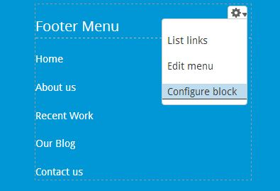

Thank you for purchasing Metro-Blocks Theme! Bellow the documentation of your theme, if you have any question please contact me at mimoun@webdevia.com if you didn't find an answer in this documentation. Please do not hesitate to post suggestions or feedback in the support forum http://themes.webdevia.com/support.
Thank you for purchasing Metro-Blocks Theme!
Bellow the documentation of your theme, if you have any question please contact me at mimoun@webdevia.com if you didn't find an answer in this documentation.
Please do not hesitate to post suggestions or feedback in the item comments on themeforest.
To install your theme just follow the steps below:
If you are going to setting new drupal site, follow bellow steps:
If you have exitsing drupal installation please follow steps at bellow:
Before to install the theme you need backup your site (Database + code)!
You can find the demo installation in the file you downloaded from themeforest, copy the "Standalone Demo" folder to you webroot. then create a daba base and import the database dump database.sql. then set database informations in the file "sites/default/settings.php"
$databases = array (
'default' =>
array (
'default' =>
array (
'database' => 'your_database_name',
'username' => 'your_username',
'password' => 'your_password',
'host' => 'localhost',
'port' => '',
'driver' => 'mysql',
'prefix' => '',
),
),
);
The login is admin and the password is admin
Metro blocks comes with a shell sub-theme called Metroblocks_sub that you can use to make customizations to the style and template structure of the parent theme without having to modify the parent theme itself. This is useful if you plan on updating the parent theme as we release updates on ThemeForest. If you performed the full install you will already see metroblocks_sub in the list of themes available.
There is an empty stylesheet already defined which is /css/style.css (inside the metroblocks_sub folder). Use this file to add all of the custom CSS that you plan on using. You can also copy any template file from the /metroblocks/templates folder into the /metroblocks_sub/templates folder and clear the cache then it will listen to the sub-themes template file first. This will allow you to update the parent theme as we make updates without losing your customizations. Just pay attention to the changelog and compare the parent theme files with yours and make any adjustments as needed.
You will need to configure the sub-themes theme settings separately from the parent theme's, so visit /admin/appearance/settings/metroblocks_sub to configure the theme settings for the sub-theme. You also need to configure the block regions separately.
Below a descriptive video
You can access block configuration by hovering the block you’ will see link to configure that block.
Thank you so much for purchasing this theme. Please do not hesitate to post suggestions or feedback in the item comments on themeforest.